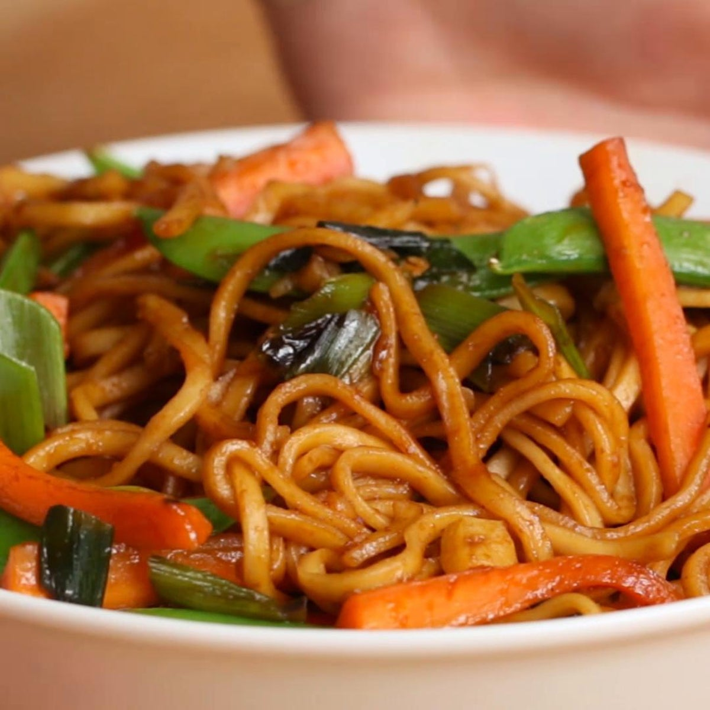

Veggie Garlic Noodles

Description
This easy and satisfying recipe features tender noodles tossed in garlic, soy sauce, and sesame oil, then topped with vegetables for a flavorful vegetarian meal.
Ingredients
- 2 tbsp vegetable oil
- 5 cloves garlic, minced
- 4 green onions,sliced, divided
- 2 carrots, cut into matchsticks
- 1 cup snap peas
- 2 tbsp brown sugar
- 3 tbsp soy sauce
- 9 oz dried rice noodles, cooked
- Heat the vegetable oil in a large skillet over medium heat. Add the garlic and 3 green onions and cook for 2–3 minutes, until fragrant and tender. Add the carrots and snap peas, then stir in the brown sugar and soy sauce.
- Add the noodles and toss for a couple of minutes, until the noodles are well-coated and the vegetables are tender. Season with salt and pepper.
- Serve immediately, garnished with the remaining green onion.
- Enjoy
Back to all recipes
Link to recipe